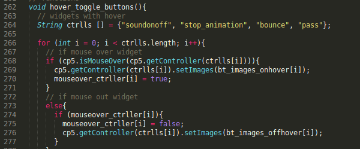
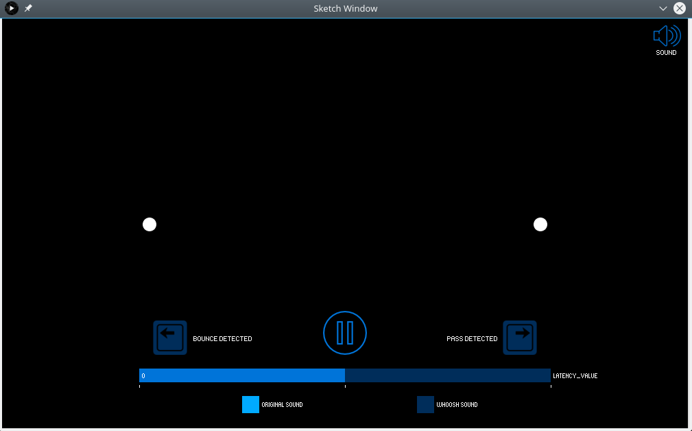

2. DESIGN
In this section the design process of this website and of the graphical interface (GUI) used for the experiments is going to be explained in detail.
2.1 Website
The whole website is based in Cafe, one of the several templates provided in open access by W3-Schools. This template was already designed to be responsive, that is, it resizes the contents to make it look good in a wide set of devices. Too small screens make difficult to see the images and read the text clearly, so the minimum width of the window has been set to 700 pixels. This means that, if the window is smaller than 700px, the contents are still accessible, but the user would need to use the horizontal scroll to be able to see them.
Images are horizontally centred and have the option alt configured, so alternative information is provided if a user, for some reason, cannot view it (e.g. slow connection, error in src attribute, user using a screen reader). Anyway, a caption has been also included below each image, explaining what is the image about.
One of the requirements of the website was that it was possible to download the files related to the assignment from it. In order to do that, three links were included in the Home page and again in the top navigation bar, so they will be accessible anywhere on the website. The possibility of downloading the report in PDF has been added in case, despite the measures taken, some of the contents cannot be well visualised.
All pages of this website follow the same pattern:
- Navigation Bar. It is fixed to the top of the page and allows the navigation across the website. The "Report" and "Download" menus are expanded when the user leaves the cursor on the correspondent button, changing the background of the option selected to light grey. The bar stays at the top of the page, losing its "fixed" feature, when the window's width is smaller than 700px, so the horizontal scrolling can be enabled.
- Header. It contains the name of the student on the left, the name of the assignment in the center and the student's ID on the right. Depending of the width and height of the window, a different part of the image will be shown, filling always the width of the window.
- Text Body. The text is centred horizontally and the alignment is set as justified.
- Footer. It allows the user to go back to the top of the page by clicking on the button "To the top". Besides, it contains icons that links to the personal Twitter and LinkedIn accounts of the student and the Github repository used for the assignment. When the cursor is on it, the background is changed to black.
- Home. Here we find the background of the author, the explanation of the original experiment of Watanabe et al. and a brief description of the approach followed in this assignment. Here we also find the links, placed into icons, to download the different files of the assignment. When we place the cursor on one of this icons, it becomes bigger, its colour becomes more saturated and the text below is underlined. The user needs to have Javascript activated in the browser for the latter, but the rest of features would work as usual.
- Description. Full description of the approach followed for the experiments. The two sounds used are located inside audio tags. They try to load the sound from the first source, which is the sound file. If the browser does not support HTML audio tags, they will load the message instead, reporting the situation to the user. Code used to include the audio in the Description
- Design. Current website where the design of the website and the GUI is explained.
- Evaluation. pass
- Summary. pass
2.2 Graphical User Interface
The design of the GUI started analysing the controls that would be necessary to add in order to perform the altered experiment. These controls are, first, being able to select one (and only one) of the sounds; and second, being able to select the latency of the sound among three possible values: 200ms before the collision, at the moment of the collision or 200ms after. Some other controls were added besides these two:
- Play/Pause. Stops the animation of the dots, so it is easier to explain how the GUI works to the observers.
- Result Input. Allow the observers to use the mouse instead of the keyboard (keys ← and →) to report their perception.
- Sound on/off. Same as the Play/Pause control, make it easier the explanation without the collision sound in the background.
Once we know what the GUI should include, the next step is to create a mockup. The image below shows the mockup used in the design process of our GUI, created using the online tool Balsamiq Cloud.
 Mockup of the GUI
Mockup of the GUI
The Play/Pause button is placed in the centre, taking the usual structure of a music or video player. The Result Input buttons, located on the sides, have attached a label that indicates their function. The latency is controlled with a slider, located just below these buttons. It will have a total of three values, being the latency zero (i.e. sound played when dots collide) the default.
The sound used in the experiment is set using radio buttons, which means that when one of them is selected, the other one is automatically unselected. As we did with the Result Input buttons, they also have attached a label indicating the sound enabled by each one. Finally, the Sound on/off button is located on the east top corner of the window.
Using the given code and with the help of the mockup, we can finally start developing the GUI. The language used in the implementation is Processing, an open-source programming language built on Java that uses a simplified syntax. The library ControlP5, written by Andreas Schlegel, provide a wide set of controls that we have used to build our GUI.
The library provide the functionality of the controls, but the default layout is very basic. To improve it we have used icons and images downloaded from Flaticon, loading them when the buttons are created. These buttons, however, do not have any on hover properties that alert the user that they are actually buttons. In order to create this "on hover", we load the same button image, but with a lighter background.
The function hover_toggle_buttons() is in charge of this feature. Every iteration of the draw loop it checks the property isMouseOver of all the buttons. If it has the mouse over on the current iteration, it loads the "light" image; while if it had the mouse over in the previous iteration, it loads the "dark" image again.
 Code used to apply on hover features to the buttonsBesides when the mouse is over them, the buttons that report the perception of the experiment also change to a lighter color when the related keys (← and →) are pressed. The functions keyPressed, to change to the light color, and keyReleased, to change back to the usual color, were used to perform this feature.
In the case of the Play/Pause and the Sound on/off, the widget ToogleButton was used instead of the usual buttons, as they must keep the state after the user release the mouse click. The second state of the buttons (i.e. pause and sound off) is identified with different icons. They are automatically loaded by the library because when we created the buttons, we passed both "state" images to the method.
As said before, to change the sound we finally used Radio Buttons, which only allow to activate one of the options at the same time. However, unlike the rest of buttons, they do not change the value of the associated variable when the user change the state of the button. Instead, we need to use an event listener function controlEvent, which is called only when the state of the button changes, and get the current value of the radio button to update the variable that controls which sound is played.
Applying all this changes, the final version of the GUI is as follows:
 Final design of the GUI